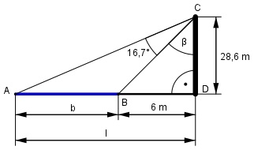

Aufgabe 97 Ein Turm von 28,6 m Höhe steht 6 m von einem Flussufer entfernt. Von seiner Spitze aus sieht man den Fluss unter einem Sehwinkel von 16,7°. Bestimmen Sie die Flussbreite b.

Im Dreieck BDC: 6 m tan β = --------- = 0,2098 --> β = 11,8° 28,6 m Im Dreieck ADC : l tan (16,7° + 11,8°) = -------- |*28,6 m 28,6 m 28,6 m * tan 28,5° = l l = 28,6 m * 0,543 = 15,5 m b = l – 6 m = 15,5 m – 6 m = 9,5 m